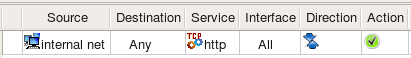

The network object describes an IP network or subnet. Use main menu "Net Object / New Network" item to create objects of this type. The dialog of the Network obejct provides the following entry fields:
Lets try to use Network object shown on the screenshot above in a policy rule of firewalls compiled for different target platforms.
Here is what we get for iptables:
$IPTABLES -A FORWARD -p tcp -m tcp -s 172.16.22.0/24 --dport 80 -m state --state NEW -j ACCEPT
Here is the output produced for PF:
pass in quick inet proto tcp from 172.16.22.0/24 to any port 80 keep state
pass out quick inet proto tcp from 172.16.22.0/24 to any port 80 keep state
Here is how the output looks like when the rule is compiled into Cisco IOS access-lists (this is one of the generated access lists):
ip access-list extended outside_out
permit tcp 172.16.22.0 0.0.0.255 any eq 80
exit
Here is what we get when the rule is compiled into Cisco ASA (PIX) configuration. Note how compiler uses netmask 255.255.255.0 for PIX, while for IOS it was converted to 0.0.0.255. Also, interface inside was confgured with network zone 172.16.0.0/12 which matched network object used in the source element of the rule, because of that compiler put the rule only into access list attached to interface inside.
access-list inside_acl_in permit tcp 172.16.22.0 255.255.255.0 any eq 80
access-group inside_acl_in in interface inside
The network object describes an IPv6 network or subnet. This object is very similar to the IPv4 Network object, except you can only enter netmask as a bit length. Use main menu "Net Object / New Network IPv6" item to create objects of this type.
Lets see what we get if we use IPv6 Network object in a policy rule like shown in the screenshot:

Here is the command generated for iptables:
$IP6TABLES -A FORWARD -p tcp -m tcp -s 2001:470:1f0e:162::/64 --dport 80 -m state --state NEW -j ACCEPT
Here is what we get for PF:
pass in quick inet6 proto tcp from 2001:470:1f0e:162::/64 to any port 80 keep state
pass out quick inet6 proto tcp from 2001:470:1f0e:162::/64 to any port 80 keep state
Here is the output for Cisco IOS access lists (only one ACL is shown):
ipv6 access-list ipv6_outside_out
permit tcp 2001:470:1f0e:162::/64 any eq 80
exit
interface eth0
ipv6 traffic-filter ipv6_outside_out out
exit
There is no IPv6 support for Cisco ASA (PIX) in fwbuilder at this time.
The Address Range object describes a continuous range of IPv4 addresses. (Arbitrary address ranges are unsupported for IPv6.) To create new Address Range object, use main menu "New Object / New Address Range". Its dialog provides the following entry fields:
The Address range is inclusive, that is, both the start and the end addresses are included in the range.
When Address Range object is used in a rule, Firewall Builder replaces it with a list of addresses equivalent to the specified range. The program tries to generate most economical representation of the range using combiantion of subnets of different length. Consider Address Range object as shown on the screenshot above. This Address Range object represents IP addresses between 192.168.1.100 and 192.168.1.160 (inclusively). It would be wasteful to generate 61 iptables commands to represent this range. Instead, compiler uses combination of several subnets of different length and ends up with the following:
$IPTABLES -A FORWARD -s 192.168.1.100/30 -m state --state NEW -j ACCEPT
$IPTABLES -A FORWARD -s 192.168.1.104/29 -m state --state NEW -j ACCEPT
$IPTABLES -A FORWARD -s 192.168.1.112/28 -m state --state NEW -j ACCEPT
$IPTABLES -A FORWARD -s 192.168.1.128/27 -m state --state NEW -j ACCEPT
$IPTABLES -A FORWARD -s 192.168.1.160 -m state --state NEW -j ACCEPT
Here is how generated configuration looks like for PF (this is essentially the same except it uses tables for brevity):
table <tbl.r0.s> { 192.168.1.100/30 , 192.168.1.104/29 , 192.168.1.112/28 , 192.168.1.128/27 , 192.168.1.160 }
pass in quick inet from <tbl.r0.s> to any keep state
Just for completness, lets look at the configuration generated for the same rule for Cisco IOS access lists. This is really jsut a fragment of the generate router access list configuration because geenrated ACLs are attached to interfaces and, since the rule in the example was not associated with any interface, it got attached to all of them. Here we show only one generated ACL:
ip access-list extended inside_in
!
! Rule 0 (global)
!
!
permit ip 192.168.1.100 0.0.0.3 any
permit ip 192.168.1.104 0.0.0.7 any
permit ip 192.168.1.112 0.0.0.15 any
permit ip 192.168.1.128 0.0.0.31 any
permit ip host 192.168.1.160 any
exit
The group of objects holds references to Hosts, Networks, Address Ranges, Firewalls and other groups of addressable objects. Use main menu "New Obejct / New Obejct Group" to create new obejct of this type. Objects can be added to the group using the following methods: